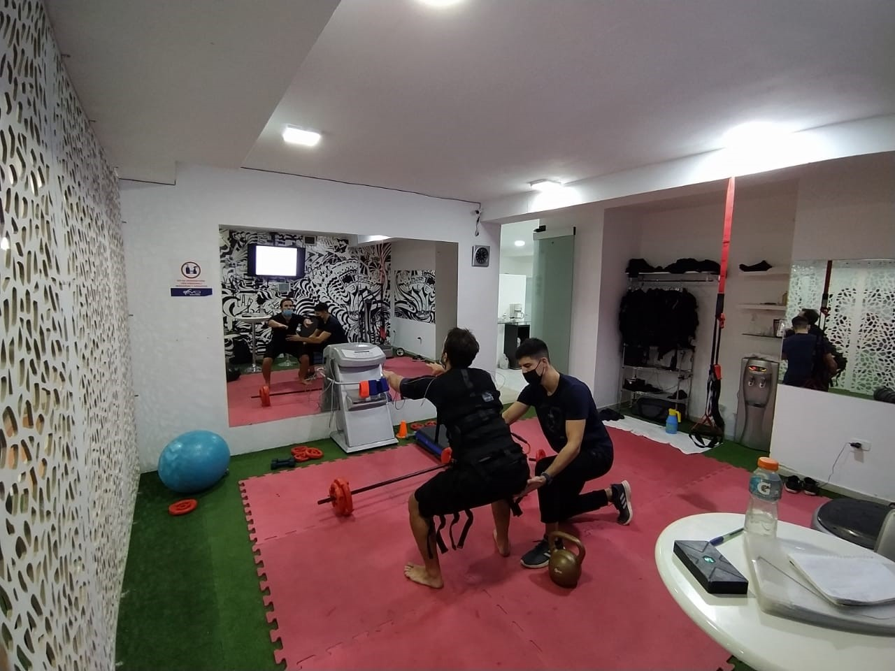

Dirreccion: Dr. Luis Podesta Costa 3210
Horario: lunes a viernes de 9 a 20
Telefono: 3513876934
Horario: lunes a viernes de 9 a 20
Telefono: 3513876934
La tecnología EMS estimula al cuerpo con entrenamientos musculares intensivos, haciendo trabajar a los músculos utilizando una estimulación simultánea de la musculatura profunda y superficial y sin recargar las articulaciones, abdominales ni pectorales. Los dispositivos de quinta generación utilizan la tecnología EMS y han sido desarrollados para proporcionar estimulación a todo el cuerpo permitiendo llegar a capas musculares más profundas difíciles de activar mediante el entrenamiento convencional, produciendo así unos resultados altamente eficaces.
Electrofitness Puede ser utilizado y programado para distintos objetivos del cliente, ya sean estos la preparación deportiva, la tonificación de masa muscular, la protección de articulaciones, la prevención de lesiones, la disminución de dolores de espalda, la quema de calorías, la reducción de celulitis o estar en forma. Y hasta la rehabilitación médica.
